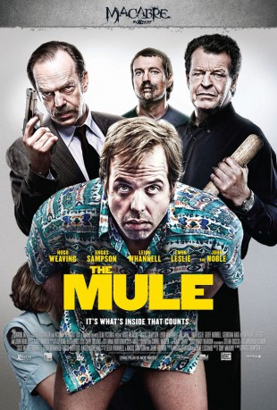

#1114 The Mule
Alternativ: The Mule - Nur die inneren Werte zählen (Englischer Titel)
 
 IMDB-Wertung: 6.3 / 10
IMDB-Wertung: 6.3 / 10  Metascore: 57
Metascore: 57 
Ray ist wohl eher der klassische Verlierertyp, der bei seinen Eltern wohnt und dessen einziges Talent darin besteht, im örtlichen Elektrogeschäft Dinge zu reparieren. Trotzdem wird er für seine Treue zum lokalen Sportverein mit einer Auszeichnung belohnt. Das wird natürlich kräftig mit den Teamkollegen gefeiert und so kommt man ins Gespräch. Er erfährt, dass Kamerad Gavin einen kleinen Nebenverdienst hat, indem er Drogen aus Thailand über die Grenze schmuggelt. Schließlich schafft es der Schmuggler, Ray dazu zu überreden, es ihm gleichzutun. Allerdings verliert der Anfänger völlig die Nerven und wird festgenommen. Er weigert sich, geröntgt zu werden, behauptet gegen Abführmittel allergisch zu sein und verkneift sich dringende Bedürfnisse, die zum Ausscheiden der Drogen führen würden. Doch die Untersuchungshaft unter der Aufsicht der Polizisten Paris und Croft dauert eine ganze Woche und auch der auf seinen Stoff wartende Drogendealer Pat wird langsam ungeduldig.
Jahr: 2014
Dauer: 103 Minuten
FSK: 16
Land: Australien Studio: MFA FilmdistributionTonspuren: DTS - ,
Untertitel: Deutsch,
Auflösung: 1080p (1920x808) Größe: 8079 MB
Genre: Komödie, Krimi, Drama
Regisseur: Tony Mahony, Angus Sampson
Drehbuch: Leigh Whannell, Angus Sampson, Jaime Browne, Jaime Browne
Soundtrack: Cornel Wilczek, Mikey Young
Darsteller:
 Hugo Weaving als Det. Tom Croft
Hugo Weaving als Det. Tom Croft Angus Sampson als Ray Jenkins
Angus Sampson als Ray Jenkins Leigh Whannell als Gavin Ellis
Leigh Whannell als Gavin Ellis Ewen Leslie als Det. Les Paris
Ewen Leslie als Det. Les Paris- Geoff Morrell als John O'Hara
- Georgina Haig als Jasmine Griffiths
 John Noble als Pat Shepherd
John Noble als Pat Shepherd- Nick Farnell als Customs Scott
- Brendan Bacon als Neil
- Maria Volk als Tiffany
- Lasarus Ratuere als Josh
 Richard Davies als Simon Rowland
Richard Davies als Simon Rowland- Fletcher Humphrys als Dave Coupland
 Chris Pang als Phuk
Chris Pang als Phuk- Gavin Wood als Himself
- Noni Hazlehurst als Judy Jenkins
- Marney McQueen als Customs Deb
- Dave Lawson als Cheeky Graeme
- Emma-Jane Newton als Sandra Spence
- Alex Menglet als Victor
- Ilya Altman als Ziggy Woytak
- Jai Spence als Permed Keith
- James Kelly als Horse
- Michael Rhodes als T-Bone
- David Griffiths als Dirt Train
- Hayden Bellis als H
- Adam Connolly als Desh
- Adam Upton als Uppers
- Shinichiro Ishikawa als Discreet Tourist
- Cameron Cairnes als Sex Pest 2
- Colin Cairnes als Sex Pest 3
- Shaun Grant als Transgender Essayist
- Sombart Chamclan als Sonia's Guard
- Chor Huat 'Billy' Loh als Sonia Oung
- Ri-Jie Kwok als Whipping Boy
- Jim Daly als Immigration Officer
- Winston als Customs Hound
- Alistair Flower als Sleazy Pete
- Satvinder Singh Gandhi als Customs Officer
- Peter Knowles als Dr. Norman
- Tim Bone als Hotel Cook
- Camilo Salgado als Room Service Waiter
- Simon King als Dr. Zaki
- Angus Coupland als Wayne the Waiter
- Tim Robertson als Judge Irving
- Glenn Arrowsmith als Det. Kent Flower
- Adrian Goodwin als Slug
- Cindy Waddingham als Customs Official
- Matt Carter als Himself
- Sylvie de Crespigny als Jag Lady
Datei: X:\2014(G-M)\Mule, The (2014, FSK16, 1920x808).mkv seit 21.05.2015
Festplatte: HD 2013(I-Z)-2014(A-Z)
 Es gibt insgesamt 136 Filme in der Gruppe '2014(G-M)'
Es gibt insgesamt 136 Filme in der Gruppe '2014(G-M)'